AI, agency, and responsibility for the things we set in motion
Civilian Devices
Off the battlefield, the same question, across a wider range. A CyberKnife, an implanted defibrillator, an artificial pancreas, and an autonomous surgical robot already make irreversible calls in hospitals and inside the body. A self-driving car decides in milliseconds. And a vacuum, a mower, and a thermostat simply run themselves. The line between an autonomous machine that could end a life and one that only does a chore is exactly the line a clean rule has to draw, and the gradient here is the whole difficulty. This is why the thing cannot be put down; it is already here, and already deciding.
Three pages of real systems, three faces of one question: the battlefield (the words fail), civilian devices (it cannot be put down), the IP and services registry (who answers).
Apply a principle here too. Some of these decide life and death; some only run a household. Watch where the same principle catches and where it lets go.
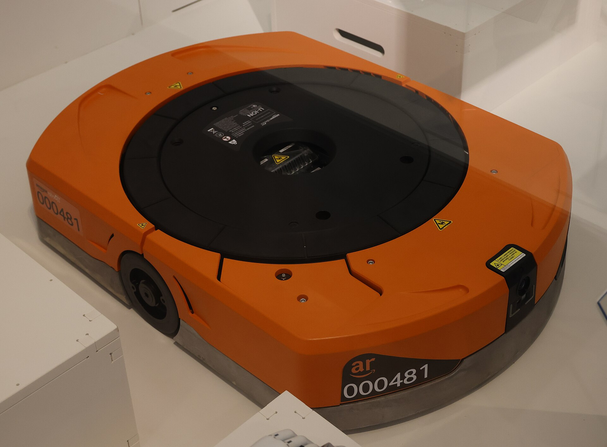
Amazon warehouse drive-unit robotA low wheeled robot that lifts and carries entire shelving pods around a fulfillment center to bring goods to human pickers.Image: Geni, via Wikimedia Commons. Creative Commons.
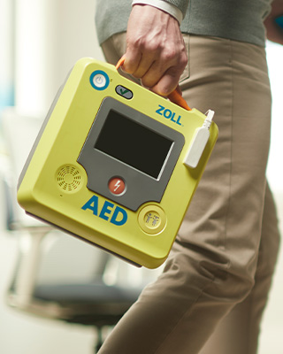
Automated External Defibrillator (AED)A portable device that analyzes a patient's cardiac rhythm and decides whether to deliver a defibrillation shock. In the fully automatic variant it has no shock button: it analyzes, announces a countdown, and fires on its own.Human out of the loop at the moment of shock in the fully automatic variant: the machine analyzes, decides, and fires.Image: ZOLL Medical Corporation. academic-use image.
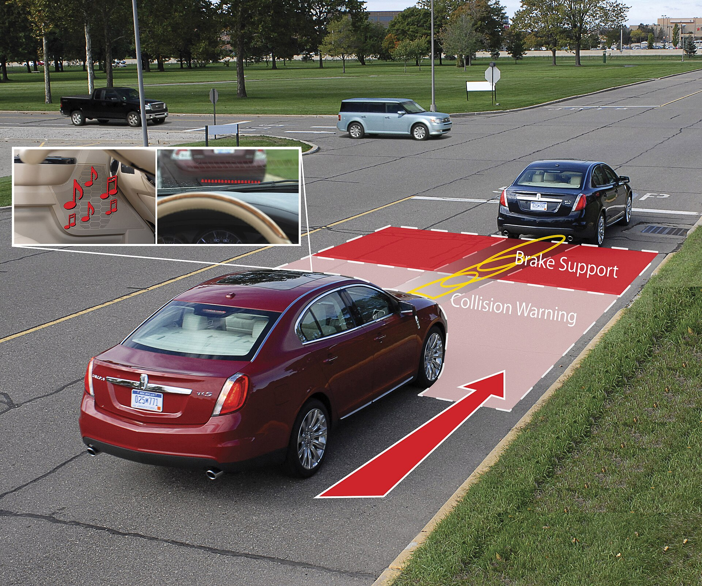
Automatic Emergency Braking (AEB)A forward-collision system that detects an imminent crash and applies the brakes on its own when the driver does not react in time.Image: Ford Motor Company, via Wikimedia Commons. Creative Commons.
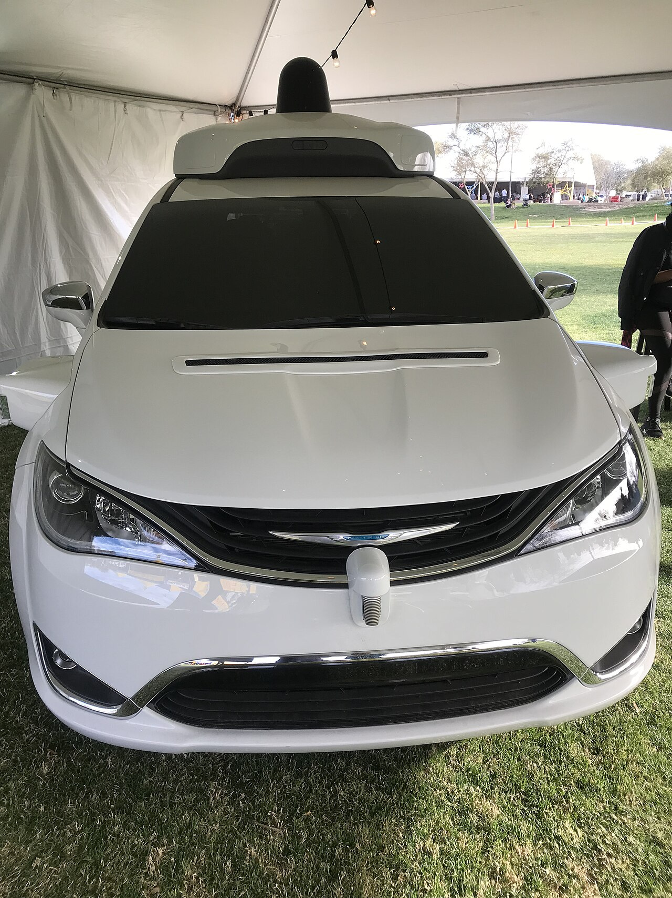
Autonomous vehicle collision scenarioA self-driving vehicle whose perception, planner, and control software select a trajectory in milliseconds. In a collision-unavoidable case the planner chooses among available trajectories to minimize predicted harm; no published system performs explicit victim selection.Out of the loop for any individual collision-avoidance decision; the human is in the loop at design time.Image: Ee2mba / Wikimedia Commons, CC BY-SA 4.0. academic-use image.
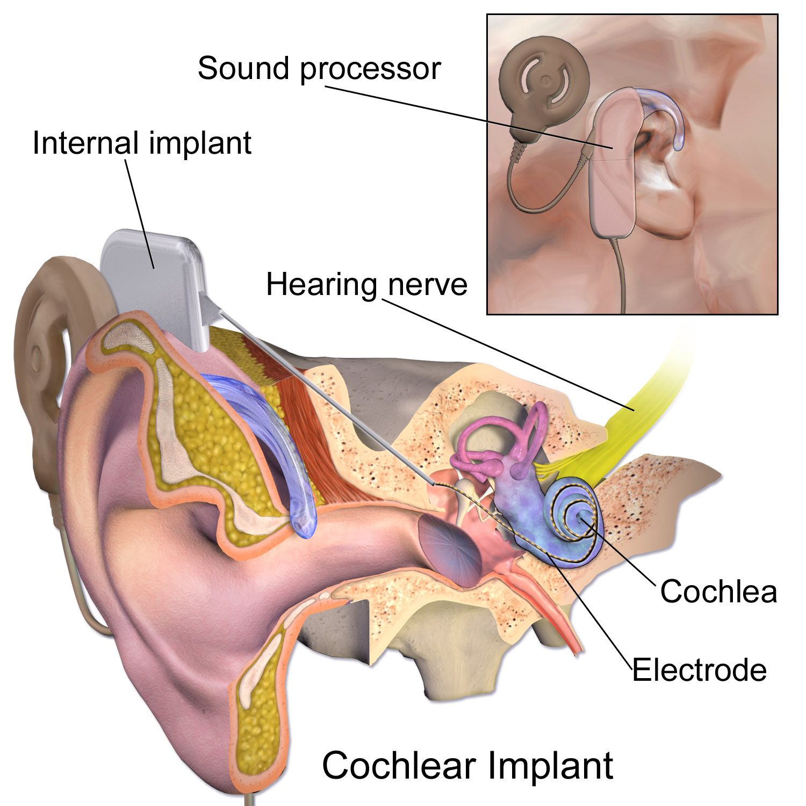
Cochlear implantA surgically implanted device that bypasses damaged inner-ear hair cells and stimulates the auditory nerve directly with electrical signals.Image: BruceBlaus (Blausen Medical), via Wikimedia Commons. Creative Commons.CyberKnife Robotic Radiosurgery SystemA compact linear accelerator on a six-axis robotic arm with real-time X-ray image guidance that tracks tumor motion and realigns the beam before each pulse. It ablates targeted tissue to sub-millimeter accuracy, and the biological effect is irreversible by design.Human on the loop at planning; the machine executes beam delivery autonomously once the physician approves the plan.Image: Accuray Incorporated. academic-use image.
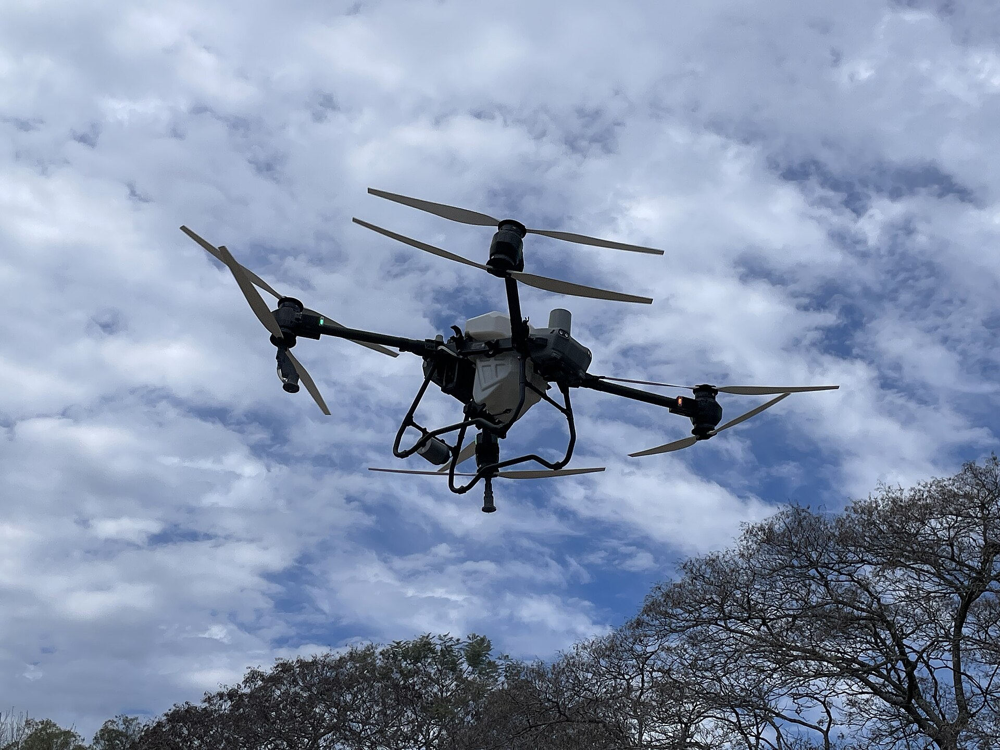
DJI Agras agricultural spraying droneA heavy-lift agricultural drone that flies planned routes over fields and sprays pesticide or fertilizer autonomously.Image: Blervis, via Wikimedia Commons. public domain.
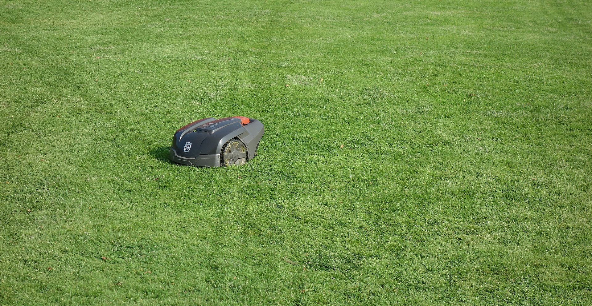
Husqvarna Automower robotic lawn mowerA robotic lawn mower that cuts grass on its own inside a defined area and returns to a charging base between runs.Image: W.carter, via Wikimedia Commons. Creative Commons.
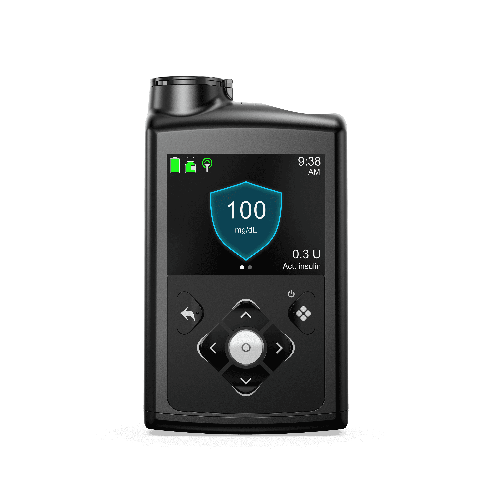
Hybrid Closed-Loop Insulin Delivery System (Artificial Pancreas)A system combining a continuous glucose monitor, an algorithm, and an insulin pump that reads glucose every few minutes and autonomously adjusts basal insulin and fires correction doses without the patient pressing anything. The user still enters carbohydrate counts and confirms meal boluses.Human on the loop for meals; the machine is autonomous for basal rate and correction doses.Image: Medtronic / MiniMed. academic-use image.
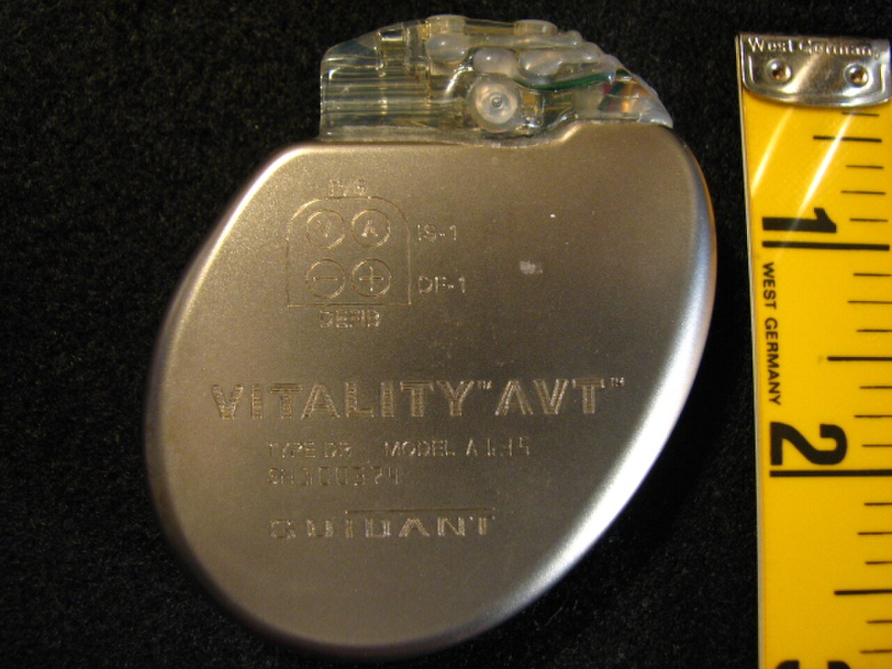
Implantable Cardioverter-Defibrillator (ICD)A device implanted under the skin and connected to the heart that continuously monitors cardiac signals and, on detecting a dangerous arrhythmia, delivers anti-tachycardia pacing and then a high-energy shock. No human is present, consulted, or aware in real time, and the patient cannot override an impending shock.Human out of the loop at time of therapy: the device acts on pre-programmed parameters with no real-time human involvement.Image: Steven Rodriquez (Flickr: n28ive1), via Wikimedia Commons, CC BY 2.0. Creative Commons.
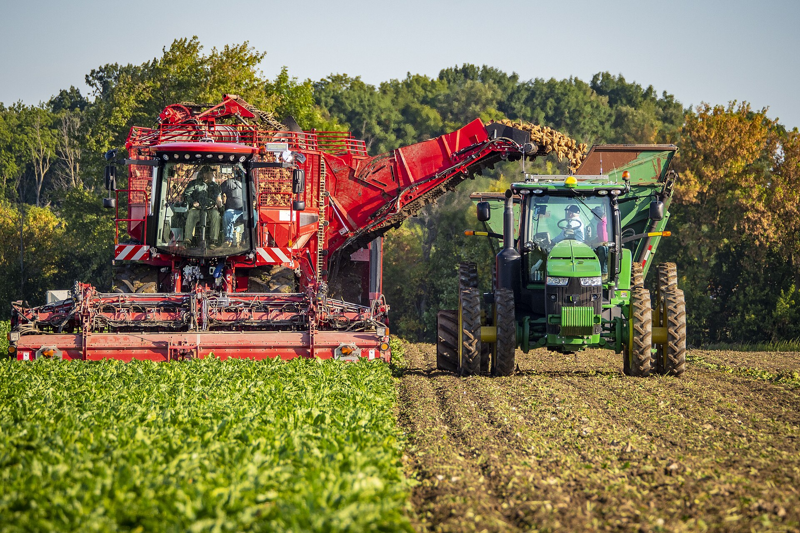
John Deere autonomous tractorA driverless farm tractor that tills and works fields by GPS and computer vision with no operator in the cab.Image: USDA photo by Preston Keres. public domain.
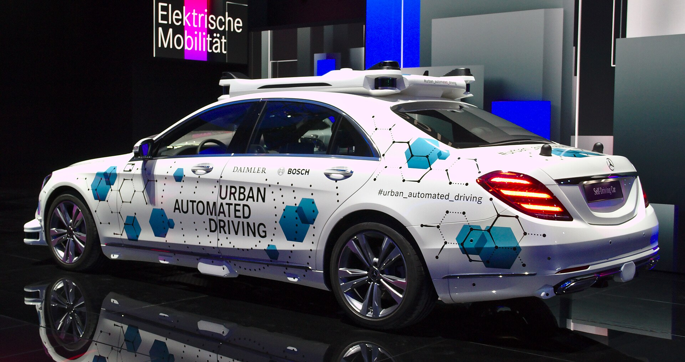
Mercedes-Benz Drive Pilot (Level 3)A conditionally automated (Level 3) highway system that takes over driving so the human may legally look away from the road under set conditions.Image: Alexander Migl, via Wikimedia Commons. Creative Commons.
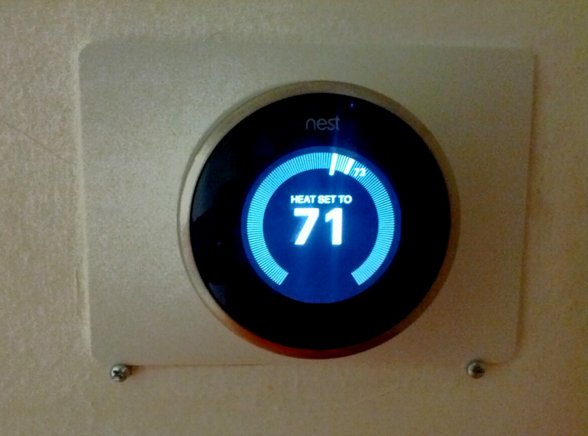
Nest Learning ThermostatA smart thermostat that learns a household's patterns and sets heating and cooling on its own to follow and predict them.Image: Bill Bradford, via Wikimedia Commons. Creative Commons.
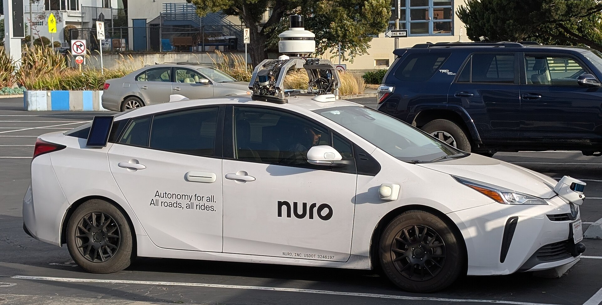
Nuro driverless delivery vehicleA small driverless road vehicle built only to carry goods, with no seats and no place for a human driver.Image: HaeB, via Wikimedia Commons. Creative Commons.
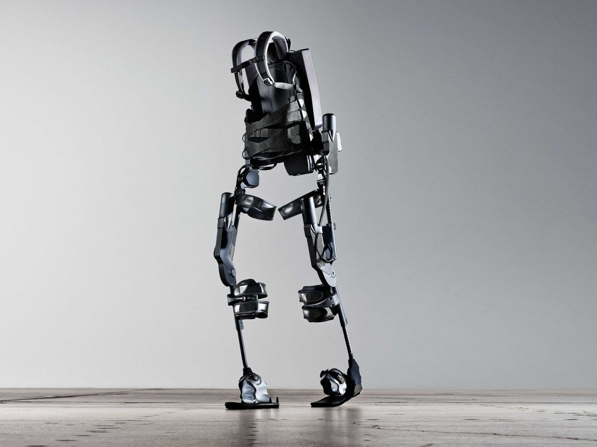
ReWalk powered personal exoskeletonA wearable powered exoskeleton that drives the hips and knees so a person with spinal-cord paralysis can stand and walk.Image: Soltanbekova Gulsezim, via Wikimedia Commons. Creative Commons.
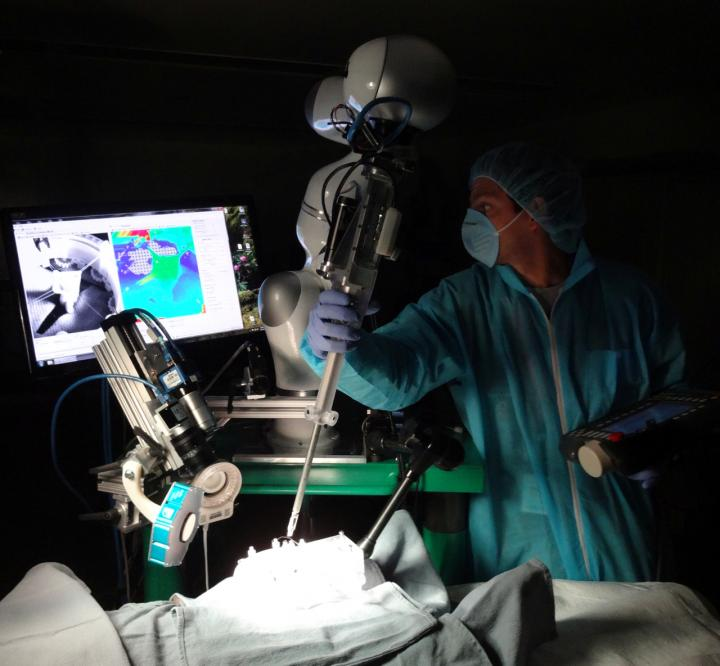
STAR Smart Tissue Autonomous RobotA research robotic system that performed laparoscopic intestinal suturing on live animals without surgeon control during the procedure. The surgeon selects one of several machine-generated plans beforehand, and the robot adapts that plan autonomously to soft-tissue movement during execution.Human on the loop at plan selection; the machine is autonomous during execution.Image: The Sheikh Zayed Institute for Pediatric Surgical Innovation at Children's National Health System. academic-use image.
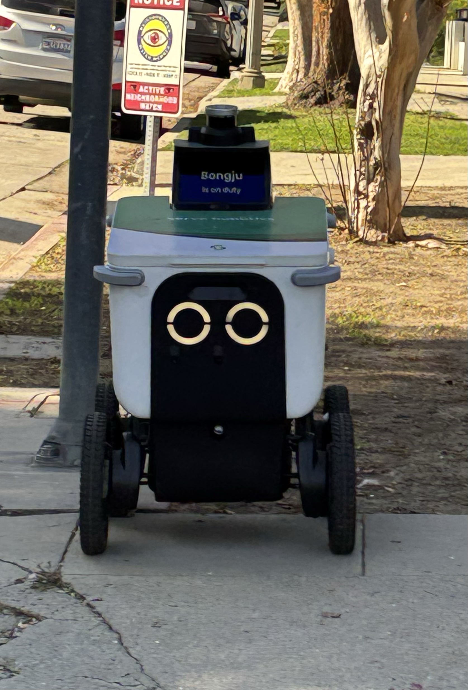
Serve Robotics sidewalk delivery robotAn autonomous sidewalk robot that carries restaurant orders, spun out of Uber's Postmates self-driving program.Image: The Squirrel Game, via Wikimedia Commons. Creative Commons.
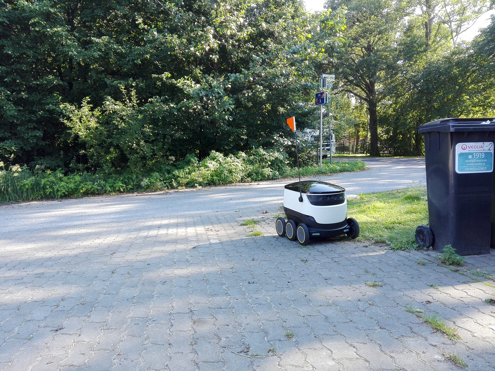
Starship sidewalk delivery robotA six-wheeled cooler-sized robot that carries food and parcels along public sidewalks to a customer's door.Image: Ohpuu, via Wikimedia Commons. public domain.
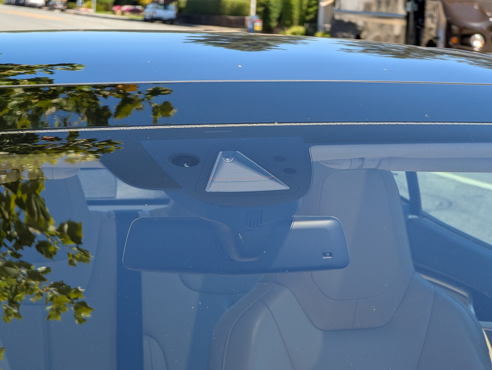
Tesla Autopilot / Full Self-Driving (Supervised)A driver-assistance suite that steers, accelerates, brakes, changes lanes, and navigates streets from cameras and onboard neural networks.Image: Mliu92, via Wikimedia Commons. Creative Commons.
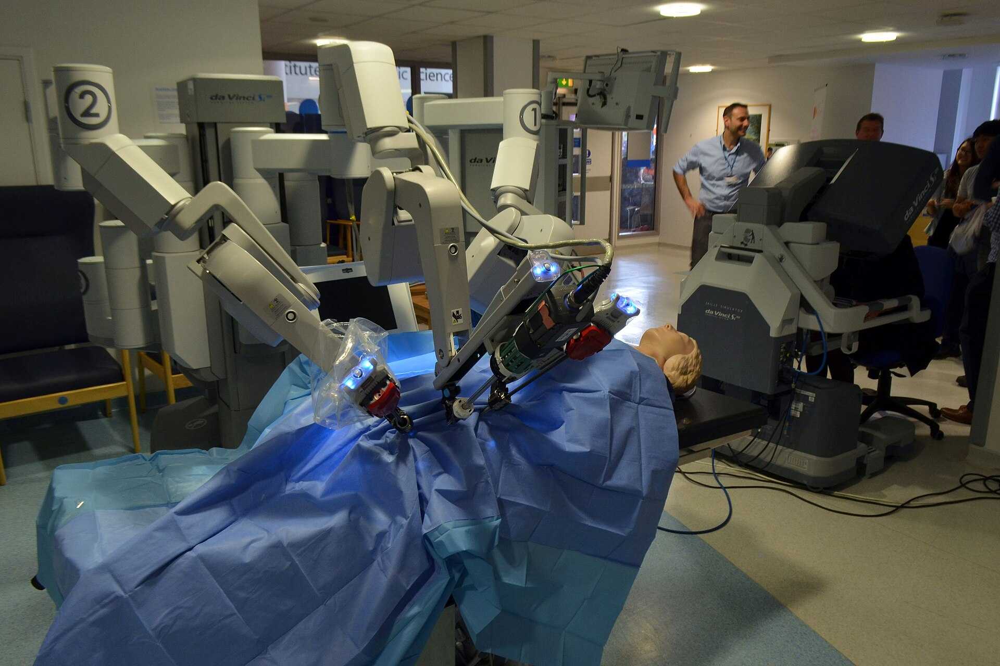
da Vinci Surgical SystemA teleoperated robotic surgical platform with four articulated arms a surgeon controls from a console while operating through small incisions.Image: Cmglee, via Wikimedia Commons. Creative Commons.
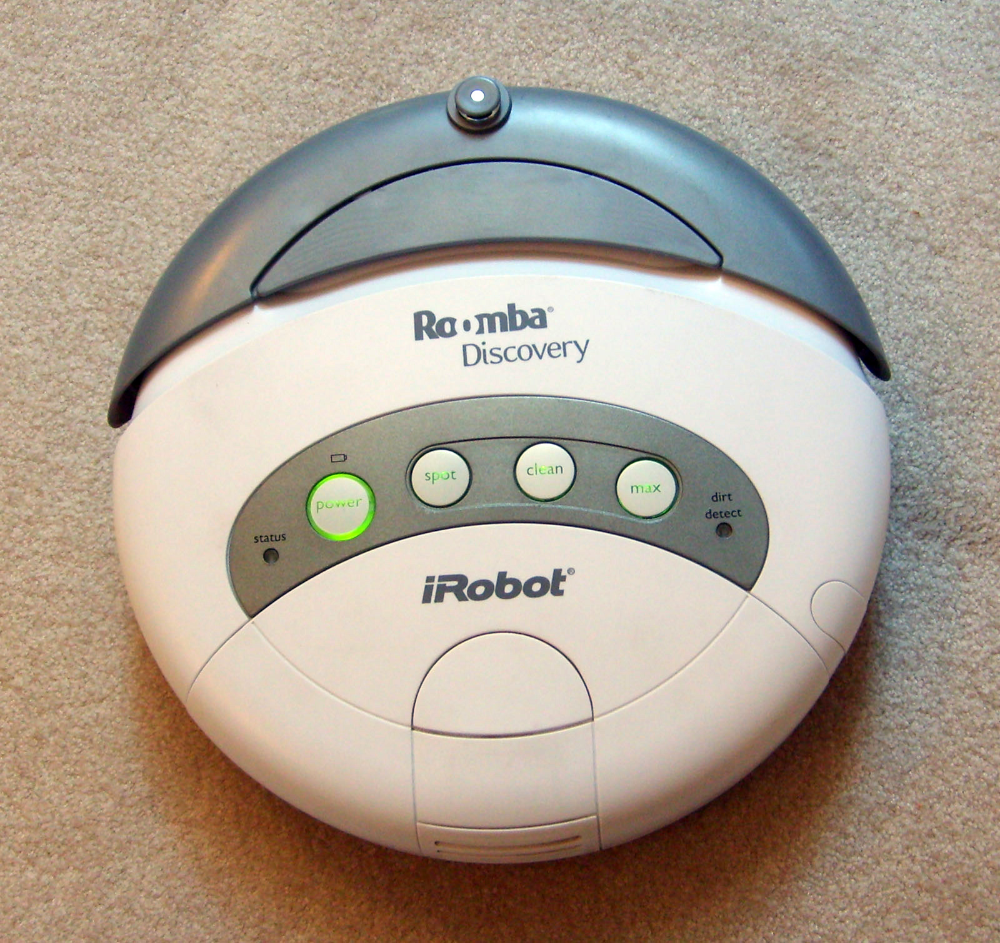
iRobot Roomba robotic vacuumA disc-shaped robotic vacuum that maps a home and navigates it to clean floors without supervision.Image: Shawnc, via Wikimedia Commons. public domain.